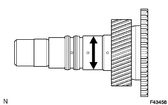
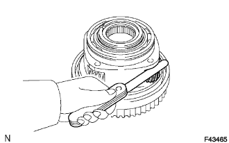
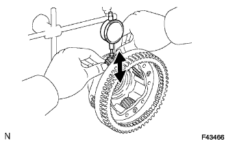
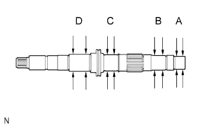
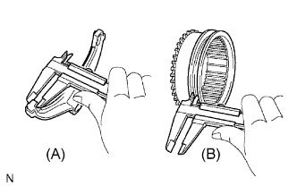
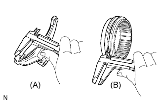
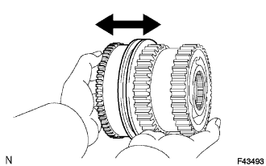
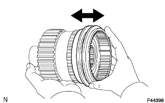

РАЗДАТОЧНАЯ КОРОБКА В СБОРЕ > ПРОВЕРКА |
| 1. ПРОВЕРЬТЕ ПЕРВИЧНЫЙ ВАЛ РАЗДАТОЧНОЙ КОРОБКИ |
|  |
С помощью микрометра измерьте наружный диаметр поверхности шейки первичного вала.
| 2. ПРОВЕРЬТЕ ОСЕВОЙ ЗАЗОР ВЕДУЩЕЙ ШЕСТЕРНИ ПЛАНЕТАРНОЙ ПЕРЕДАЧИ |
|  |
С помощью комплекта плоских щупов измерьте осевой зазор ведущей шестерни планетарной передачи.
| 3. ПРОВЕРЬТЕ РАДИАЛЬНЫЙ ЗАЗОР ВЕДУЩЕЙ ШЕСТЕРНИ ПЛАНЕТАРНОЙ ПЕРЕДАЧИ |
|  |
С помощью индикатора часового типа измерьте радиальный зазор ведущей шестерни планетарной передачи.
| 4. ПРОВЕРЬТЕ ЗАДНИЙ ВЫХОДНОЙ ВАЛ РАЗДАТОЧНОЙ КОРОБКИ |
|  |
С помощью микрометра измерьте наружные диаметры поверхностей шеек заднего выходного вала.
| 5. ПРОВЕРЬТЕ ЗАЗОР ВИЛКИ ПЕРЕКЛЮЧЕНИЯ ПЕРЕДАЧ РАЗДАТОЧНОЙ КОРОБКИ № 2 И СОЕДИНИТЕЛЬНОЙ МУФТЫ ВЫСШЕЙ И НИЗШЕЙ ПЕРЕДАЧ РАЗДАТОЧНОЙ КОРОБКИ |
|  |
С помощью штангенциркуля измерьте толщину захвата вилки переключения.
С помощью штангенциркуля измерьте ширину канавки соединительной муфты высшей и низшей передач раздаточной коробки.
Рассчитайте зазор между вилкой переключения и соединительной муфтой высшей и низшей передач.
| 6. ПРОВЕРЬТЕ ЗАЗОР ПЕРЕДНЕЙ СОЕДИНИТЕЛЬНОЙ МУФТЫ ПРИВОДА И ВИЛКИ БЛОКИРОВКИ МЕЖОСЕВОГО ДИФФЕРЕНЦИАЛА В СБОРЕ |
|  |
С помощью штангенциркуля измерьте толщину захвата вилки блокировки межосевого дифференциала.
С помощью штангенциркуля измерьте ширину канавки передней соединительной муфты привода.
Рассчитайте зазор между передней соединительной муфтой привода и вилкой блокировки дифференциала.
| 7. ПРОВЕРЬТЕ КОРПУС МЕЖОСЕВОГО ДИФФЕРЕНЦИАЛА И СОЕДИНИТЕЛЬНУЮ МУФТУ ВЫСШЕЙ И НИЗШЕЙ ПЕРЕДАЧ РАЗДАТОЧНОЙ КОРОБКИ |
|  |
Убедитесь, что шлицы соединительной муфты не изношены.
Установите соединительную муфту на корпус межосевого дифференциала и убедитесь, что она вращается плавно.
| 8. УСТАНОВИТЕ КОРПУС МЕЖОСЕВОГО ДИФФЕРЕНЦИАЛА И ПЕРЕДНЮЮ СОЕДИНИТЕЛЬНУЮ МУФТУ ПРИВОДА |
|  |
Убедитесь, что шлицы соединительной муфты не изношены.
Установите соединительную муфту на корпус межосевого дифференциала и убедитесь, что она вращается плавно.